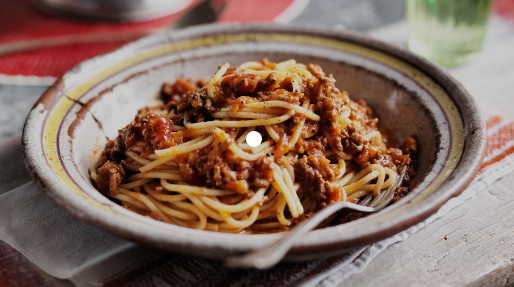

Spaghetti Bolognese Recipe

This is a delicious, simple dish created from a combination of Jamie Oliver and Marco Pierre-White's methods.
enjoy!
Ingredients
- Beef mince - 500g
- Onion - 1 large
- Carrots - 2 medium, diced
- Pancetta ham (Unsmoked) - 50g (One packet)
- Chopped tomato - 1 can
- Tomato puree - 2 tbls
- Bay leaves - 3 medium
- Beef/Vegetable stock - 500ml
- Red wine - (Optional)
- Spaghetti
- Basil
- Oregano
- Garlic - 3 to 4 cloves
- Olive oil, salt & pepper
Method
- Heat 2 tbls of olive oil in a skillet or large frying pan on medium to high heat
- Add the onion and garlic and cook until fragrant or the onion is translucent
- Add the carrot and cook for a further 3-5 minutes or until it has started to soften
- Separate the mixture to create space in the pan and add the pancetta ham, cook until browned
- Add the beef mince and cook for 3-5 minutes or until browned and reduced in size
- Add a splash red wine to de-glaze the pan,
- Add the chopped tomatoes, tomato puree and the stock to the mixture and stir
- Add the bay leaves, basil and oregano to taste, along with salt & pepper
- Cook for around 30-40 minutes, meanwhile cook spaghetti according to packet instructions
- Serve and enjoy!